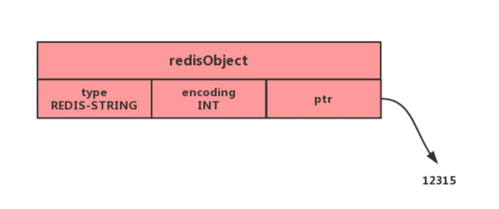

redis-数据类型
Redis 提供了丰富的数据类型，常见的有五种：
String（字符串）、List（列表）、Hash（哈希）、Set（集合）、Zset（有序集合）。
Redis 数据类型对应数据结构

String（字符串）
介绍
String 是最基本的 key-value 结构，，key 是唯一标识，value 是具体的值，value其实不仅是字符串， 也可以是数字（整数或浮点数），value 最多可以容纳的数据长度是 512M。
内部实现
String 类型的底层的数据结构实现主要是 int 和 SDS（简单动态字符串）。
SDS 相比于 C 的原生字符串：
SDS 不仅可以保存文本数据，还可以保存二进制数据。因为 SDS 使用 len 属性的值而不是空字符来判断字符串是否结束
SDS 获取字符串长度的时间复杂度是 O(1)。因为 C 语言的字符串并不记录自身长度，所以获取长度的复杂度为 O(n)；而 SDS 结构里用 len 属性记录了字符串长度，所以复杂度为 O(1)。
Redis 的 SDS API 是安全的，拼接字符串不会造成缓冲区溢出。因为 SDS 在拼接字符串之前会检查 SDS 空间是否满足要求，如果空间不够会自动扩容，所以不会导致缓冲区溢出的问题。
字符串对象的内部编码（encoding）有 3 种 ：int、raw和 embstr。

整数值可以用long类型来表示

字符申的长度小于等于 44 字节，一次内存分配函数来分配一块连续的内存空间来保存redisObject和SDS，所有数据都保存在一块连续的内存里面可以更好的利用 CPU 缓存提升性能。

字符申的长度大于 44 字节，调用两次内存分配函数来分别分配两块空间来保存redisObject和SDS。

embstr 字符串长度增加需要重新分配内存时，整个redisObject和sds都需要重新分配空间，所以embstr编码的字符串对象实际上是只读的。对embstr编码的字符串对象执行任何修改命令（例如append）时，程序会先将对象的编码从embstr转换成raw，然后再执行修改命令。
常用命令
普通字符串基本操作
1 | # 设置 key-value 类型的值 |
批量设置
1 | # 批量设置 key-value 类型的值 |
计数器（字符串的内容为整数的时候可以使用）：
1 | # 设置 key-value 类型的值 |
过期（默认为永不过期）：
1 | # 设置 key 在 60 秒后过期（该方法是针对已经存在的key设置过期时间） |
不存在就插入：
1 | # 不存在就插入（not exists） |
应用场景
缓存对象
缓存整个对象的 JSON
SET user:1 '{"name":"xiaolin", "age":18}'
将 key 进行分离为 user:ID:属性
MSET user:1:name xiaolin user:1:age 18 user:2:name xiaomei user:2:age 20
常规计数
因为 Redis 处理命令是单线程，所以执行命令的过程是原子的。因此 String 数据类型适合计数场景，比如计算访问次数、点赞、转发、库存数量等等。
1 | # 初始化文章的阅读量 |
分布式锁
SET 命令有个 NX 参数可以实现「key不存在才插入」，可以用它来实现分布式锁：
1. 如果 key 不存在，则显示插入成功，可以用来表示加锁成功；
2. 如果 key 存在，则会显示插入失败，可以用来表示加锁失败。
一般而言，还会对分布式锁加上过期时间，分布式锁的命令如下：
SET lock_key unique_value NX PX 10000
lock_key 就是 key 键；
unique_value 是客户端生成的唯一的标识；
NX 代表只在 lock_key 不存在时，才对 lock_key 进行设置操作；
PX 10000 表示设置 lock_key 的过期时间为 10s，这是为了避免客户端发生异常而无法释放锁
解锁的过程就是将 lock_key 键删除，但不能乱删，要保证执行操作的客户端就是加锁的客户端。
// 释放锁时，先比较 unique_value 是否相等，避免锁的误释放
if redis.call("get",KEYS[1]) == ARGV[1] then
return redis.call("del",KEYS[1])
else
return 0
end
共享 Session 信息
开发后台管理系统时，会使用 Session 来保存用户的会话(登录)状态，这些 Session 信息会被保存在服务器端，但这只适用于单系统应用，如果是分布式系统此模式将不再适用。
借助 Redis 对这些 Session 信息进行统一的存储和管理，这样无论请求发送到那台服务器，服务器都会去同一个 Redis 获取相关的 Session 信息
List（列表）
介绍
List 列表是简单的字符串列表，按照插入顺序排序，可以从头部或尾部向 List 列表添加元素。
列表的最大长度为 2^32 - 1，也即每个列表支持超过 40 亿个元素。
内部实现
List 类型的底层数据结构是由双向链表或压缩列表实现的：
1. 如果列表的元素个数小于 512 个（默认值，可由 list-max-ziplist-entries 配置），列表每个元素的值都小于 64 字节（默认值，可由 list-max-ziplist-value 配置），Redis 会使用ziplist（压缩列表）作为 List 类型的底层数据结构；连续内存空间，存储效率高，不利于修改操作，插入和删除操作需要频繁申请和释放内存。
2. 如果列表的元素不满足上面的条件，Redis 会使用双向链表作为 List 类型的底层数据结构，前后指针浪费16字节。其次，双向链表的各个节点是单独的内存块，地址不连续，节点多了容易产生内存碎片。
但是在 Redis 3.2 版本之后，List 数据类型底层数据结构就只由 quicklist 实现了，替代了双向链表和压缩列表。

常用命令
1 | # 将一个或多个值value插入到key列表的表头(最左边)，最后的值在最前面 |
应用场景
消息队列
消息队列在存取消息时，必须要满足三个需求，分别是消息保序、处理重复的消息和保证消息可靠性。
消息保序：使用 LPUSH + RPOP；
阻塞读取：使用 BRPOP；
重复消息处理：生产者自行实现全局唯一 ID；
消息的可靠性：使用 BRPOPLPUSH
如何满足消息保序需求？
List 可以使用 LPUSH + RPOP （或者反过来，RPUSH+LPOP）命令实现消息队列。
Redis提供了 BRPOP 命令。BRPOP命令也称为阻塞式读取，客户端在没有读到队列数据时，自动阻塞，直到有新的数据写入队列，再开始读取新数据。

如何处理重复的消息？
每个消息都有一个全局的 ID。
消费者要记录已经处理过的消息的 ID。当收到一条消息后，消费者程序就可以对比收到的消息 ID 和记录的已处理过的消息 ID，来判断当前收到的消息有没有经过处理。
但是 List 并不会为每个消息生成 ID 号，所以我们需要自行为每个消息生成一个全局唯一ID，生成之后，我们在用 LPUSH 命令把消息插入 List 时，需要在消息中包含这个全局唯一 ID
如何保证消息可靠性？
如果消费者程序在处理消息的过程出现了故障或宕机，就会导致消息没有处理完成，那么，消费者程序再次启动后，就没法再次从 List 中读取消息了。
为了留存消息，List 类型提供了 BRPOPLPUSH 命令，这个命令的作用是让消费者程序从一个 List 中读取消息，同时，Redis 会把这个消息再插入到另一个 List（可以叫作备份 List）留存。
List 作为消息队列有什么缺陷？
List 不支持多个消费者消费同一条消息，因为一旦消费者拉取一条消息后，这条消息就从 List 中删除了，无法被其它消费者再次消费
Hash（哈希）
介绍
Hash 是一个键值对（key - value）集合。Hash 特别适合用于存储对象。
内部实现
Hash 类型的底层数据结构是由压缩列表或哈希表实现的：
1. 如果哈希类型元素个数小于 512 个（默认值，可由 hash-max-ziplist-entries 配置），所有值小于 64 字节（默认值，可由 hash-max-ziplist-value 配置）的话，Redis 会使用压缩列表作为 Hash 类型的底层数据结构；
2. 如果哈希类型元素不满足上面条件，Redis 会使用哈希表作为 Hash 类型的 底层数据结构。
3. 在 Redis 7.0 中，压缩列表数据结构已经废弃了，交由 listpack 数据结构来实现了。
常用命令
1 | # 存储一个哈希表key的键值 |
应用场景
缓存对象
Hash 类型的 （key，field， value） 的结构与对象的（对象id， 属性， 值）的结构相似，也可以用来存储对象。
我们可以使用如下命令，将用户对象的信息存储到 Hash 类型：
1 | # 存储一个哈希表uid:1的键值 |
购物车
以用户 id 为 key，商品 id 为 field，商品数量为 value，恰好构成了购物车的3个要素，如下图所示。
涉及的命令如下：
添加商品：HSET cart:{用户id} {商品id} 1
添加数量：HINCRBY cart:{用户id} {商品id} 1
商品总数：HLEN cart:{用户id}
删除商品：HDEL cart:{用户id} {商品id}
获取购物车所有商品：HGETALL cart:{用户id}
Set（集合）
介绍
Set 类型是一个无序并唯一的键值集合，它的存储顺序不会按照插入的先后顺序进行存储。
一个集合最多可以存储 2^32-1 个元素。概念和数学中个的集合基本类似，可以交集，并集，差集等等，所以 Set 类型除了支持集合内的增删改查，同时还支持多个集合取交集、并集、差集。
内部实现
Set 类型的底层数据结构是由哈希表或整数集合实现的：
如果集合中的元素都是整数且元素个数小于 512 （默认值，set-maxintset-entries配置）个，Redis 会使用整数集合作为 Set 类型的底层数据结构；
如果集合中的元素不满足上面条件，则 Redis 使用哈希表作为 Set 类型的底层数据结构。
常用命令
- 常用操作
1
2
3
4
5
6
7
8
9
10
11
12
13
14
15
16# 往集合key中存入元素，元素存在则忽略，若key不存在则新建
SADD key member [member ...]
# 从集合key中删除元素
SREM key member [member ...]
# 获取集合key中所有元素
SMEMBERS key
# 获取集合key中的元素个数
SCARD key
# 判断member元素是否存在于集合key中
SISMEMBER key member
# 从集合key中随机选出count个元素，元素不从key中删除
SRANDMEMBER key [count]
# 从集合key中随机选出count个元素，元素从key中删除
SPOP key [count] - 运算操作
1
2
3
4
5
6
7
8
9
10
11
12
13
14# 交集运算
SINTER key [key ...]
# 将交集结果存入新集合destination中
SINTERSTORE destination key [key ...]
# 并集运算
SUNION key [key ...]
# 将并集结果存入新集合destination中
SUNIONSTORE destination key [key ...]
# 差集运算
SDIFF key [key ...]
# 将差集结果存入新集合destination中
SDIFFSTORE destination key [key ...]
应用场景
集合的主要几个特性，无序、不可重复、支持并交差等操作。
这里有一个潜在的风险。Set 的差集、并集和交集的计算复杂度较高，在数据量较大的情况下，如果直接执行这些计算，会导致 Redis 实例阻塞。
在主从集群中，为了避免主库因为 Set 做聚合计算（交集、差集、并集）时导致主库被阻塞，我们可以选择一个从库完成聚合统计，或者把数据返回给客户端，由客户端来完成聚合统计
点赞
Set 类型可以保证一个用户只能点一个赞，这里举例子一个场景，key 是文章id，value 是用户id。
uid:1 、uid:2、uid:3 三个用户分别对 article:1 文章点赞了。
1 | # uid:1 用户对文章 article:1 点赞 |
共同关注
Set 类型支持交集运算，所以可以用来计算共同关注的好友、公众号等。
key 可以是用户id，value 则是已关注的公众号的id。
1 | # uid:1 用户关注公众号 id 为 5、6、7、8、9 |
抽奖活动
存储某活动中中奖的用户名 ，Set 类型因为有去重功能，可以保证同一个用户不会中奖两次。
key为抽奖活动名，value为员工名称，把所有员工名称放入抽奖箱 ：
1 | >SADD lucky Tom Jerry John Sean Marry Lindy Sary Mark |
Zset（有序集合）
介绍
Zset 类型（有序集合类型）相比于 Set 类型多了一个排序属性 score（分值），对于有序集合 ZSet 来说，每个存储元素相当于有两个值组成的，一个是有序集合的元素值，一个是排序值。
有序集合保留了集合不能有重复成员的特性（分值可以重复），但不同的是，有序集合中的元素可以排序。

内部实现
Zset 类型的底层数据结构是由压缩列表或跳表实现的：
1. 如果有序集合的元素个数小于 128 个，并且每个元素的值小于 64 字节时，Redis 会使用压缩列表作为 Zset 类型的底层数据结构；
2.如果有序集合的元素不满足上面的条件，Redis 会使用跳表作为 Zset 类型的底层数据结构；
在 Redis 7.0 中，压缩列表数据结构已经废弃了，交由 listpack 数据结构来实现了。
常用命令
常用操作
1
2
3
4
5
6
7
8
9
10
11
12
13
14
15
16
17
18
19
20
21
22
23
24# 往有序集合key中加入带分值元素
ZADD key score member [[score member]...]
# 往有序集合key中删除元素
ZREM key member [member...]
# 返回有序集合key中元素member的分值
ZSCORE key member
# 返回有序集合key中元素个数
ZCARD key
# 为有序集合key中元素member的分值加上increment
ZINCRBY key increment member
# 正序获取有序集合key从start下标到stop下标的元素
ZRANGE key start stop [WITHSCORES]
# 倒序获取有序集合key从start下标到stop下标的元素
ZREVRANGE key start stop [WITHSCORES]
# 返回有序集合中指定分数区间内的成员，分数由低到高排序。
ZRANGEBYSCORE key min max [WITHSCORES] [LIMIT offset count]
# 返回指定成员区间内的成员，按字典正序排列, 分数必须相同。
ZRANGEBYLEX key min max [LIMIT offset count]
# 返回指定成员区间内的成员，按字典倒序排列, 分数必须相同
ZREVRANGEBYLEX key max min [LIMIT offset count]Zset 运算操作（相比于 Set 类型，ZSet 类型没有支持差集运算）：
1
2
3
4# 并集计算(相同元素分值相加)，numberkeys一共多少个key，WEIGHTS每个key对应的分值乘积
ZUNIONSTORE destkey numberkeys key [key...]
# 交集计算(相同元素分值相加)，numberkeys一共多少个key，WEIGHTS每个key对应的分值乘积
ZINTERSTORE destkey numberkeys key [key...]
应用场景
Zset 类型（Sorted Set，有序集合） 可以根据元素的权重来排序，我们可以自己来决定每个元素的权重值。比如说，我们可以根据元素插入 Sorted Set 的时间确定权重值，先插入的元素权重小，后插入的元素权重大。
在面对需要展示最新列表、排行榜等场景时，如果数据更新频繁或者需要分页显示，可以优先考虑使用 Sorted Set。
排行榜
有序集合比较典型的使用场景就是排行榜。例如学生成绩的排名榜、游戏积分排行榜、视频播放排名、电商系统中商品的销量排名等。
我们以博文点赞排名为例，小林发表了五篇博文，分别获得赞为 200、40、100、50、150。
1 | # arcticle:1 文章获得了200个赞 |
电话、姓名排序
使用有序集合的 ZRANGEBYLEX 或 ZREVRANGEBYLEX 可以帮助我们实现电话号码或姓名的排序
注意：不要在分数不一致的 SortSet 集合中去使用 ZRANGEBYLEX和 ZREVRANGEBYLEX 指令，因为获取的结果会不准确。
1 | > ZADD phone 0 13100111100 0 13110114300 0 13132110901 |